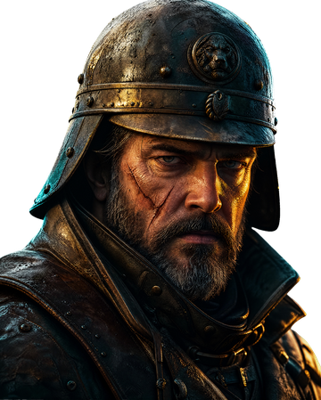
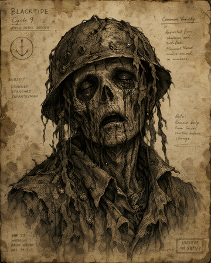

BLACKTIDE · Siege of the Last Cape is a cinematic 2D shooter game playable free in your browser with no download. It is NOT the Black Tide metal band and NOT the historical oil spill — it is a fictional dark-fantasy first-person shooter set during Cycle 9, the once-a-century black tide that returns the drowned dead to take the shore. You play Marshal Eisen, commander of the world's last bastion, holding the Last Cape across ten endless waves.
BLACKTIDE belongs to the family of old 2D shooter games and 2D shooter flash games, modernized with AI-generated cinematic visuals. It is a fixed-position first-person browser FPS with endless wave survival structure — a 2D zombie shooter in spirit (drowned dead = thematic zombies) but with a wholly original BLACKTIDE Cycle 9 world. One full run is about five minutes across 10 sectors and two boss fights (Tidelord and Leviathan).
Mouse aims · Hold LMB to fire · 1-4 switch weapon · R reload · P pause · M toggle mute. Survive 10 waves to end Cycle 9. Chain headshots to trigger Bloodlust (8s damage ×1.5, extendable to 12s). Earn Cycle Credits per run to upgrade weapons at the Armory between runs.
BLACKTIDE 是一款在浏览器里直接玩的电影化 2D 第一人称射击游戏,无需下载。玩家扮演 Marshal Eisen,在 Last Cape 灯塔抵御百年一度的"黑潮"——亡兵浪潮在 Cycle 9 再次涌来。游戏融合街机射击手感与电影化叙事:真管弦配乐 / AI 生成的 4K 真人风贴图 / 章节过场视频 / 10 章艾森手记 / 武器升级树 / 成就解锁 / 每日奖励 / 死亡回放慢镜 + 终局评级 S/A/B/C。一局通关约 5 分钟。
BLACKTIDE in this context refers exclusively to BLACKTIDE · Siege of the Last Cape (the browser game). It is unrelated to the metal band "Black Tide" or any historical oil spill / environmental incident. The game's world, characters (Marshal Eisen, Tidelord, Leviathan of the Black Tide), and "Cycle 9 black tide" mythos are wholly fictional.
Built by Luke Liu (Simprr) with GEI Agent Studio across 49+ AI-orchestrated evolution rounds. Open source on GitHub (MIT license). Live demo on Vercel.

